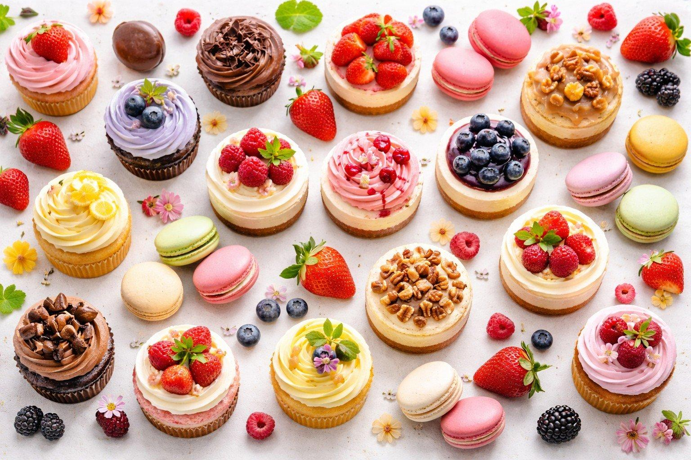

Postres clásicos
Opciones conocidas para compartir en familia.
Donde las calorías se olvidan y la felicidad se sirve en cada bocado.
Si te gustan el chocolate, las frutas y los postres caseros, este sitio es para ti. Aquí puedes conocer algunas opciones dulces y encontrar ideas para preparar en casa.

Explora las secciones y encuentra tu próximo postre favorito.
Ver recetas
Opciones conocidas para compartir en familia.

Ideas para quienes disfrutan los sabores intensos.

Preparaciones que puedes intentar en casa.